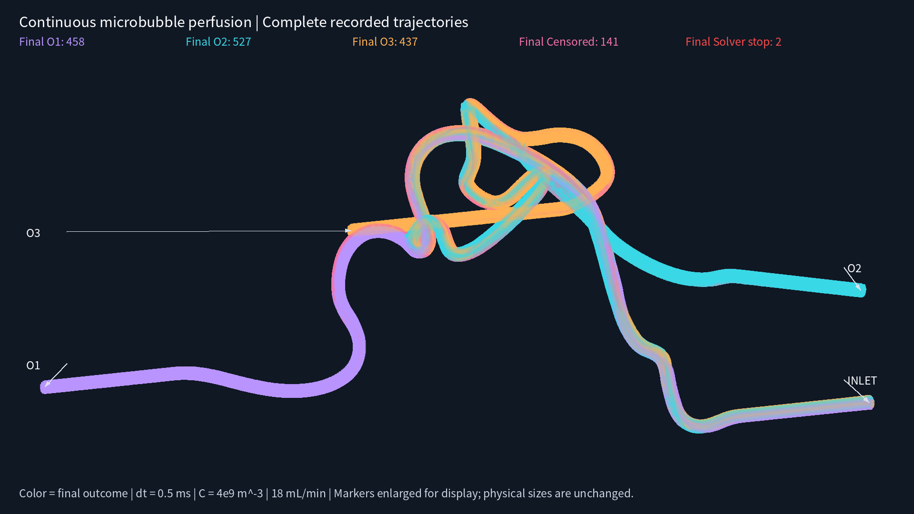

Physical time; source C = 4e9 m^-3, Q = 18 mL/min, dt = 0.5 ms. Stop infusion after at least 20 actual center crossings at every outlet, then observe for 12 seconds. Colors indicate final outcomes. Red solver stops are numerical failures, not physiological trapping.
Trajectory PDF · Rendering provenance · Chinese validation report
